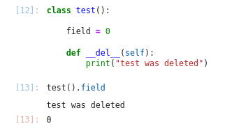
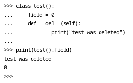

Разбор спецальных меодов/полей в языке программирования python3
Источники информации#
Python на примерах Васильев А.Н. глава 8, раздел Специальные методы и поля
Классы которые послужат примером#
Специальные методы и поля начинаются и заканчиваются двумя подчеркиваниями. Далее рассмотрим сисетму классов, на примере которой будут разобраны возможности всех специальных методов/полей.
Классы родители и мета классы
class Thing(type):
'''
Класс вещь. Это метакласс.
Дело в том, что некоторые методы могут быть
переопределены только в метаклассах.
'''
def __instancecheck__(self, instance):
'''
Будет вызван для базовой функции isinstace
'''
print("__isinstacecheck__ called")
return super().__instancecheck__(instance)
def __subclasscheck__(self, subclass):
'''
Будет вызван для базовой функции issubclass
'''
print("__issubclasscheck__ called")
return super().__subclasscheck__(subclass)
class TechThing(metaclass = Thing):
'''
Класс "технологическая штука"
исопльзуется для изучения фишек связаных
с наследованием.
'''
find_field = "find field of TechThing"
class Machine(TechThing):
'''
Класс "Машина" используется для изучения
фишек связанных с наследованием
'''
pass
class Veicle():
'''
Класс "Средсво передвижения" используется
для исследования фишек связанных с наследованием
'''
find_field = "find field of Veicle"
Класс Auto класс над которым будет проводиться наибольшее число испытаний
class Auto(Veicle, Machine):
'''
Класс "Автомобиль" исопльзуется для
создания изучения специальных методов и полей
'''
class hundle():
pass
atribute_var = 5
def atribute_method(self):
pass
# ===================================================
# МЕТОДЫ ПРИВЕДЕНИЯ К ТИПУ
# ===================================================
def __bool__(self):
'''
Будет вызван для экземпляра переданного
базовой функции bool.
В данном случае я наделю её следующим смыслом -
если для экземпляра была определено поле marka
то будет преобзовываться в True в противном случае
в False
'''
return False if self.marka == None else True
def __complex__(self):
'''
Будет вызван для экземпляра преданного
базовой функции complex.
'''
return complex(len(self.marka), len(self.marka))
def __float__(self):
'''
Будет вызван для экземпляра переданного
базовой функции float.
'''
return float(len(self.marka))
def __int__(self):
'''
Будет вызван для экземпляра преданного
базовой функции int.
'''
return len(self.marka)
def __str__(self):
'''
Будет вызван для экземпляра переданного
базововй функции str.
'''
return self.marka
# ===================================================
# МЕТОДЫ ПРИВЕДЕНИЯ К ТИПУ
# ===================================================
# ===================================================
# МЕТОДЫ ДЛЯ РАБОТЫ
# с индексами (операторы [])
# ===================================================
def __setitem__(self, i, v):
'''
Метод, который будет использоваться
при использовании индекса (оператора "[]")
с присвоением.
i - переданный индекс;
v - присваиваемое занчение.
'''
self.marka = self.marka[:i] + v + self.marka[i+1:]
def __getitem__(self, i):
'''
Метод, который будет использоваться
при вызове индекса (оператора []).
i - переданный индекс.
'''
return self.marka[i]
def __delitem__(self, i):
'''
Метод, который будет вызван
при использовании оператора del
для выбранного иднекса (оператора [])
'''
self.marka = self.marka[:i] + self.marka[i+1:]
# ===================================================
# МЕТОДЫ ДЛЯ РАБОТЫ
# с индексами (операторы [])
# ===================================================
# ===================================================
# ДРУГИЕ МЕТОДЫ
# ===================================================
def __init__(self, marka):
'''
Вызывается при создании любого экземпляра
'''
self.marka = marka
def __del__(self):
'''
Вызывается при удалении любого экземпляра
'''
print(self.marka, "удачно был удален")
def __call__(self):
'''
Вызывается при вызове какого-либо экземпляра класса
'''
return "вы вызвали " + self.marka
def __len__(self):
'''
Вызывается при передаче экземпляра класса
в базовую функцию len
'''
return len(self.marka)
def __index__(self):
'''
Будет вызван при передаче экземпляра класса
одной из базовых функции bin, oct и hex.
Но самого преоброзования к соответсвующей
системе исчисления не надо - достаточно вернуть
десятичное число
'''
return 17
def __round__(self):
'''
Будет вызван при передаче экземпляра класса
базовой функции round.
'''
self.marka += " rounded"
return self
# ===================================================
# ДРУГИЕ МЕТОДЫ
# ===================================================
Класс который позволит подробнее разобраться с методами для работы с индексами (оператор [])
class indexer_example():
def print_index(self, index):
print("пришёл инедкс", index)
def __setitem__(self, i, v):
self.print_index(i)
print("пришло занчение ", v)
def __getitem__(self, i):
self.print_index(i)
def __delitem__(self, i):
self.print_index(i)
Замечание#
Заметим, интерестную деталь которую я выяснил работая над этим файлом: при вызове поля атрибута класса из только созданного объекта IPython после завершения выполнения ячейки производит удаление только, что созданного экземпляра.
Интерпритатор, понятное дело, ведет себя аналогично.
Потому не обращайте внимание на постоянно сопутсвующий примерам вывод типа:
<name_of_car> удачно был удален
Методы#
Методы метаклассов#
__instancecheck__#
Доступен пример использования Dranikf/knowledge_bank (см. раздел “Использование метаклассов”)
Будет вызван для класса при использовании встроенной функции isinstace(instance, class) - функции которая (при __instancecheck__ оставленного по умолчанию) вернет True если первый аргумент экземпляр класса указанного вторым.
isinstance(Auto("Gelentvagen"), TechThing)
__isinstacecheck__ called
Gelentvagen удачно был удален
True
Притом, ход приведенный в следующей ячейке, не сработает.
isinstance(Auto("Toyota"), Auto)
Toyota удачно был удален
True
Видимо потому, что в класс Auto не указан метакласс Thing как это сделано для класса TechThing. Весьма обывательское объяснение, но возможно в будующем я буду знать об этой концепции больше.
__subclasscheck__#
Доступен пример использования Dranikf/knowledge_bank (см. раздел “Использование метаклассов”)
Будет вызван для класса при использовании встроенной функции issubclass(class1, class2) которая (при __subclasscheck__ оставленной по умолчанию), вернет True если class1 наследник class2.
issubclass(Auto, TechThing)
__issubclasscheck__ called
True
Притом, ход приведенный в следующей ячейке, сработает, в отличии от аналогичной ситуации для другого специального метода метаклассов __instancecheck__.
issubclass(Auto, Machine)
__issubclasscheck__ called
True
Почему так, на данном этапе погружения в pyhton, остается загадкой.
Методы приведения к типу#
__bool__#
Этот метод будет вызван для любого экземпляра переданного в базовую функцию bool
print("Gili result", bool(Auto("Gili")))
print("None result", bool(Auto(None)))
Gili удачно был удален
Gili result True
None удачно был удален
None result False
__complex__#
Этот метод будет вызваться при передече экземпляра класса в функцию complex. complex производит преведение переданного объекта к типу complex. В данном случае я в преобразование заложил чтобы действительная и мнимая части числа были равны числу букв в марке автомобиля.
complex(Auto("Lexus"))
Lexus удачно был удален
(5+5j)
__float__#
Этот метод будет вызваться при предаче экземпляра класса в функцию float. float произодит приведение переданного объекта к типу float. В данном случае я в преобразование заложил, чтобы возвращалось число символов в поле marka преобарзованное к типу float
float(Auto("Hyundai"))
Hyundai удачно был удален
7.0
__int__#
Этот метод будет вызываться при передаче экземпляра класса в функцию int. int производит приведенение переданного объекта к типу int. В данном случае я в преобразование заложил, чтобы приведение означало подсчет числа символов в марке автомобиля.
int(Auto("Mitsubishi"))
Mitsubishi удачно был удален
10
__str__#
Этот метод будет вызываться при передаче экземпляра класса в функцию str. str производит приведение переданного объекта к строковому типу. В данном случае я в преобразование заложил, чтобы приведение просто возвращало марку автомобиля.
str(Auto("Honda"))
Honda удачно был удален
'Honda'
Методы для работы с индексами#
__setitem__#
Метод, который будет вызваться при использовании оператора [] с присвоением. В метод __setitem__ должен содерать два аргумента:
индекс - объект указонный в скобках;
значение - присваимое заначение (после оператора
=).
Был заложен смысл извлечения замены символа в марке автомобиля.
maz_car = Auto("Maserati")
maz_car[3] = "t"
print(maz_car)
Mastrati удачно был удален
Mastrati
__getitem__#
Метод, который будет вызваться при использовании оператора [], для извелечения значения. В данном случае, индекс используется как индекс марки автомобиля.
bug_car = Auto("Bugatti")
bug_car[:3]
'Bug'
__delitem__#
Метод, который будет вызываться при использовании оператора [] вместе с оператором del. В данном случае, из марки автомобиля
bmw_car = Auto("BMW")
del bmw_car[1]
bmw_car.marka
BW удачно был удален
'BW'
Множественный индекс#
При передаче множественного индекса, функции __setitem__, __getitem__ и __delitem__ в аргуметы соответвующие индексу получают картеж.
ind_exmpl = indexer_example()
ind_exmpl[3,4,5,"str index"]
пришёл инедкс (3, 4, 5, 'str index')
Опретор : внутри индекса#
При использовании : внутри индекса в методы отвечающие за управление поведением класса придет slice
ind_exmpl = indexer_example()
ind_exmpl[:3]
пришёл инедкс slice(None, 3, None)
Протокол итерации#
Или методы которые делают экземпляры класса iterable.
__iter__#
Вызывается для того, что-бы “предупредить” объект, что по нему будут итерироваться - можно провести некоторый процессинг, который будет готовить этот класс к итерированию по нему. Будет вызван при:
Передаче экземпляра в функцию
iter();При использовании после оператора
inв циклеfor.
Ожидается возврат любого объекта у которого переопределен метод __next__. Чаще всего возврящают self но не всегда.
__next__#
Определяет что класс будет возвращать при каждой следующей итерации по нему. Будет вызван при:
Передаче экземпляра в фнукцию
next();При каждой идерации цикла
forпо объекту.
Возвращать следует, то что должно попасть в теририрующую переменную на этой итерации.
В момент, когда требуется прeкратить процесс итерирования следует использовать raise StopIteration.
Базовый пример#
Эти операторы лучше рассматривать в комбинации, потому общий пример для них:
class ar_progression_shower:
'''
Класс имплементирует расчет элементов
арифметической прогрессии до определенного
наблюдения в прогрессии
'''
def __init__(self, a0 = 0, n = 5, d = 3):
self.n = n
self.a0 = a0
self.d = d
def __iter__(self):
print("был вызван __iter__")
self.i = 0
self.curr_a = self.a0
return self
def __next__(self):
print("был вызван __next__")
if self.i < self.n:
self.curr_a = self.a0 + self.d*self.i
self.i += 1
return "{} : {}".format(self.i-1, self.curr_a)
else:
print("вызван StopIteration")
raise StopIteration
example_iter = ar_progression_shower()
Можно использовать методы iter() и next().
iter(example_iter)
print(next(example_iter))
print(next(example_iter))
print(next(example_iter))
print(next(example_iter))
print(next(example_iter))
был вызван __iter__
был вызван __next__
0 : 0
был вызван __next__
1 : 3
был вызван __next__
2 : 6
был вызван __next__
3 : 9
был вызван __next__
4 : 12
Но в случае, если вывалиться за допустииое число итераций. Вывод будет следующий.
iter(example_iter)
print(next(example_iter))
print(next(example_iter))
print(next(example_iter))
print(next(example_iter))
print(next(example_iter))
print(next(example_iter))
был вызван __iter__
был вызван __next__
0 : 0
был вызван __next__
1 : 3
был вызван __next__
2 : 6
был вызван __next__
3 : 9
был вызван __next__
4 : 12
был вызван __next__
вызван StopIteration
---------------------------------------------------------------------------
StopIteration Traceback (most recent call last)
Input In [57], in <cell line: 8>()
6 print(next(example_iter))
7 print(next(example_iter))
----> 8 print(next(example_iter))
Input In [55], in ar_progression_shower.__next__(self)
24 else:
25 print("вызван StopIteration")
---> 26 raise StopIteration
StopIteration:
Все те-же самые результаты при использовании цикла.
for val in example_iter:
print(val)
был вызван __iter__
был вызван __next__
0 : 0
был вызван __next__
1 : 3
был вызван __next__
2 : 6
был вызван __next__
3 : 9
был вызван __next__
4 : 12
был вызван __next__
вызван StopIteration
type(iter(example_iter))
был вызван __iter__
__main__.ar_progression_shower
Фишки#
Без __next__#
class test:
def __iter__(self):
return self
iter(test())
---------------------------------------------------------------------------
TypeError Traceback (most recent call last)
Input In [74], in <cell line: 5>()
2 def __iter__(self):
3 return self
----> 5 iter(test())
TypeError: iter() returned non-iterator of type 'test'
class test:
def __next__(self):
return 0
def __iter__(self):
return self
iter(test())
<__main__.test at 0x7f081022c220>
list/tuple/dict как результат __iter__#
Сами по себе эти пипы не переопределяют __next__, как следвие, вернуть их как из __iter__ не получится.
class test():
def __iter__(self):
return [10, 20, 30, 40]
iter(test())
---------------------------------------------------------------------------
TypeError Traceback (most recent call last)
Input In [78], in <cell line: 5>()
2 def __iter__(self):
3 return [10, 20, 30, 40]
----> 5 iter(test())
TypeError: iter() returned non-iterator of type 'list'
class test():
def __iter__(self):
return (10, 20, 30, 40)
iter(test())
---------------------------------------------------------------------------
TypeError Traceback (most recent call last)
Input In [79], in <cell line: 5>()
2 def __iter__(self):
3 return (10, 20, 30, 40)
----> 5 iter(test())
TypeError: iter() returned non-iterator of type 'tuple'
class test():
def __iter__(self):
return {"a":10, "b":20, "c":30, "d":40}
iter(test())
---------------------------------------------------------------------------
TypeError Traceback (most recent call last)
Input In [80], in <cell line: 5>()
2 def __iter__(self):
3 return {"a":10, "b":20, "c":30, "d":40}
----> 5 iter(test())
TypeError: iter() returned non-iterator of type 'dict'
Но можно вернуть результат передачи их функции iter(). Обращею отдельное внимание на типы данных результатов.
class test():
def __iter__(self):
return iter([10, 20, 30, 40])
type(iter(test()))
list_iterator
class test():
def __iter__(self):
return iter((10, 20, 30, 40))
type(iter(test()))
tuple_iterator
class test():
def __iter__(self):
return iter({"a":10, "b":20, "c":30, "d":40})
type(iter(test()))
dict_keyiterator
Другие методы#
__init__#
Будет вызван при создании экземпляра класса
Auto("mersedes").marka
mersedes удачно был удален
'mersedes'
__del__#
Будет вызван при удалении экземпляра класса
a = Auto("москвич")
del a
москвич удачно был удален
__call__#
Вызывается при попытке “вызвать” экземпляр класса, то есть ипользование оператора () для экземплара класса.
Auto("tesla")()
tesla удачно был удален
'вы вызвали tesla'
__len__#
Вызывается при передаче экземпляра в функцию базовую функцию len. В данном случае я заложил возврат числа символов в марке.
len(Auto("Mazda"))
Mazda удачно был удален
5
__index__#
Вызывается при передаче экземпляра в одну из базовых функций bin, oct и hex. Вернуть из __index__ следует число, которое в зависимости от вызванной функции будет преобразовано соответсвенно к соответсвующей системе исчисления. В данном случае __index__ всегда возвращает число 17.
my_auto = Auto("Lambargini")
print("Приведение к бинарному виду ", bin(my_auto))
print("Приведение к восьмеричному виду ", oct(my_auto))
print("Приведение к шестнадцатиричному виду ", hex(my_auto))
Lambargini удачно был удален
Приведение к бинарному виду 0b10001
Приведение к восьмеричному виду 0o21
Приведение к шестнадцатиричному виду 0x11
__round__#
Вызвается при передаче экземпляра базовой функции round.
jeep_auto = Auto("Jeep")
round(jeep_auto).marka
Jeep rounded удачно был удален
'Jeep rounded'
Поля классов#
__bases__#
Возвраящет список базовых классов
Auto.__bases__
(__main__.Veicle, __main__.Machine)
__dict__#
Слварь с атрибутами класса. Атрибутом класса называется, что-либо объявленное в глобальном пространсве класса.
Auto.__dict__
mappingproxy({'__module__': '__main__',
'__doc__': '\n Класс "Автомобиль" исопльзуется для \n создания изучения специальных методов и полей\n ',
'hundle': __main__.Auto.hundle,
'atribute_var': 5,
'atribute_method': <function __main__.Auto.atribute_method(self)>,
'__init__': <function __main__.Auto.__init__(self, marka)>,
'__del__': <function __main__.Auto.__del__(self)>,
'__call__': <function __main__.Auto.__call__(self)>,
'__bool__': <function __main__.Auto.__bool__(self)>})
__doc__#
Док-строка класса
print(Auto.__doc__)
Класс "Автомобиль" исопльзуется для
создания изучения специальных методов и полей
__module__#
Возвращается модуль класса
import pandas as pd
pd.DataFrame.__module__
'pandas.core.frame'
__mro__#
Цепочка наследования класса. А именно последовантельность классов в котороых будут искаться те или иные вызываемые поля.
Идея приводимого моной тут примера в следующем - я создаю Auto и пытаюсь достать из него find_field, который определен только в базовых классах. В результате, будет выведен find_field того класса который в результатах __mro__ ближайший и, при том, имеет определение поля find_field.
Auto.__mro__
(__main__.Auto, __main__.Veicle, __main__.Machine, __main__.TechThing, object)
Auto("chevrolet").find_field
chevrolet удачно был удален
'find field of Veicle'
Вызывая find_field я наткнулся на принадлежащий классу Veicle, то есть певого в кортеже __mro__ его объявляющего.
__name__#
Возвращает имя класса
Auto.__name__
'Auto'
__qualname__#
Дословно поле описываю так: “возвращается полное имя класса в точечном формате, отображающем структуру вложенных классов”. Я понимаю это так, если я вызову у класса hundle который объявлен в нутри класса Auto
то поле, то я полулу полное имя класса в точечном формате.
Auto.hundle.__qualname__
'Auto.hundle'
Для сравнения результат вызова поля __name__ того же класса.
Auto.hundle.__name__
'hundle'
Поля экземпляров#
__class__#
Это поле содержит название класса которому принадлежт объект. Далее пару примеров
a1 = Auto("BMW")
a1.__class__
__main__.Auto
import pandas as pd
pd.DataFrame({
"1" : [1,2]
}).__class__
pandas.core.frame.DataFrame
Заметим, что сами классы это тоже эксемпляры класса type
Auto.__class__
__main__.Thing